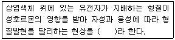
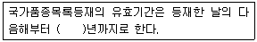

종자기사 (2009-05-10 기출문제)
1과목: 종자생산학
1. 채종포에서 재식밀도 선정시 고려해야 할 사항이 아닌 것은?
- 순도
- 토양의 비옥도
- 토성
- 가용수분함량
(정답률: 알수없음)

2. 종자가 완전한 발아를 하기 위해서는 종자 내 적당한 수분이 있어야 하는데, 다음 중 발아에 가장 많은 수분함량을 필요로 하는 것은?
- 옥수수
- 벼
- 사탕무
- 완두
(정답률: 알수없음)
3. 채종포장의 파종량 및 재식방법으로 가장 적합한 것은?
- 조파소식
- 산파소식
- 조파밀식
- 산파밀식
(정답률: 알수없음)
4. 자가불화합성의 유전양식이 배우체형인 경우에 임실종자 비율이 100%가 되는 조합은?
- S1S3 X S1S4
- S1S3 X S2S3
- S1S3 X S2S4
- S1S3 X S1S3
(정답률: 알수없음)
5. 배유에 대한 설명으로 틀린 것은?
- 속씨식물 배유의 염색체 조성은 3n이다.
- 단자엽식물의 경우 종자의 대부분을 차지한다.
- 종자가 발아하는 동안 배에 양분을 공급하게 된다.
- 난초과식물은 웅행과 극핵의 결합이 이루어지지 않으므로 배유가 형성되지 않는다.
(정답률: 알수없음)
6. 경실이 아니면서 주어진 조건에서 시험기간이 끝나도 발아하지 못하였으나 깨끗하고 건실하여 확실히 활력이 있는 종자는?
- 무배종자
- 충해종자
- 죽은 종자
- 신선종자
(정답률: 알수없음)
7. 잡종강세의 원인을 설명하는 학설이 아닌 것은?
- 초우성설
- 이반인자설
- 복대립 유전자설
- 우성 유전자 연쇄설
(정답률: 알수없음)
8. 양파에서 자식약세를 극복하기 위해서 영양번식을 하기도 한다. 화구의 어느 부분을 절단처리하여 headset top onion을 만들게 되는가?
- 화경
- 소화경
- 소화
- 주두
(정답률: 8%)
9. 다음 중 종자의 휴면성이 가장 깊은 것은?
- 야생보리
- 백색일
- 맥주보리
- 배추
(정답률: 알수없음)
10. F1 채종을 위한 인공수분시 미리 제웅을 하는 목적은?
- 작업능률 향상
- 잡종강세 발현 촉진
- 자식종자의 혼입 방지
- 봉지 내 다습에 의한 병해방지
(정답률: 알수없음)
11. 검사용 종자 시료추출의 방법으로 적합하지 않은 것은?
- 균분기이용
- 무작위컵방법
- 균분격자방법
- 표본방법
(정답률: 알수없음)
12. 일정한 양의 종자를 건조하기 전에 5.6g의 통을 포함한 무게가 35.6g이고, 건조한 후에 통을 포함한 무게가 32.6g이었다면 이 종자의 수분함량은?
- 3.0%
- 9.2%
- 10.0%
- 15.7%
(정답률: 알수없음)
13. 인공종자가 실용화되고 있는 작물은?
- 당근
- 고구마
- 배추
- 고추
(정답률: 알수없음)
14. 발아시험시 재시험을 해야 할 경우에 해당하지 않는 것은?
- 발아시험 결과가 식물독이나 곰팡이의 번식으로 신빙성이 없을 때
- 시험조건이 잘못되었을 때
- 묘의 평가가 잘못 되었을 때
- 반복간의 발아율이 +-5%범위를 벗어날 때
(정답률: 알수없음)
15. 피자식물에서 수정 후 발달하여 종자가 되는 부분은?
- 자방
- 배추
- 태좌
- 화분
(정답률: 알수없음)
16. 종자전염성 병이 아닌 것은?
- 보리 속깜부기병
- 호밀 맥각병
- 벼 검은줄오갈병
- 강낭콩 탄저병
(정답률: 알수없음)
17. 종자코팅처리의 목적과 거리가 먼 것은?
- 농약 및 영양제 첨가
- 미세한 종자의 크기 증대
- 기계파종에 유리
- 발아의 균일성 향상
(정답률: 알수없음)
18. 특히 완두의 채종지 토양에서 부족하면 차대식물의 생육에 영향을 미칠 수 있는 미량원소는?
- B
- Fe
- Mo
- Se
(정답률: 알수없음)
19. 고온항온 건조방법으로 종자 함수량 측정시 건조온도와 건조시간으로 적합한 것은?
- 130 ~133℃에서 1~4시간
- 120~ 126℃에서 5~7시간
- 1⑤℃에서 8~10시간
- 80℃에서 12시간
(정답률: 알수없음)
20. 휴면에 대한 설명으로 틀린 것은?
- 침엽수 종자가 활엽수 종자보다 휴면이 길다.
- 광발아성 종자에 근적색광(700 ~800nm)을 쪼이면 발아가 억제된다.
- 인삼종자와 소나무 종자는 미숙배로 후숙이 필수적이다.
- 미숙배, 휴면배, 각종 종피 관련 원인들에 의한 휴면을 타발휴면이라 한다.
(정답률: 알수없음)
2과목: 식물육종학
21. 유전자 웅성불임개체(msms)에 웅성가임개체(Msms)를 교배했을 때 1대잡종(F1)에서의 웅성불임과 웅성가임의 분리비는?
- 불임 1 : 가임 0
- 불임 0 : 가임 1
- 불임 1 : 가임 3
- 불임 1 : 가임 1
(정답률: 알수없음)
22. 주로 자가수정을 원칙으로 하는 작물은?
- 시금치
- 양배추
- 토마토
- 옥수수
(정답률: 알수없음)
23. 분리육종법의 이론적 근거가 된 것은?
- Mendel의 법칙
- 자연 도태설
- 진화론
- Johannsen의 순계설
(정답률: 알수없음)
24. 계통분리육종법에는 육종대상에 따라 여러가지 방법이 있는데, 이 중 계통분리육종법이 아닌 것은?
- 집단선발법
- 1수1열법
- 성군집단선발법
- 실생선발법
(정답률: 알수없음)
25. 품종의 퇴화 원인을 3가지로 크게 구별할 때 이에 속하지 않는 것은?
- 유전적인 퇴화
- 생리적인 퇴화
- 기후적인 퇴화
- 병리적인 퇴화
(정답률: 알수없음)
26. 인위 동질배수체의 일반적인 특징에 해당되지 않는 것은?
- 핵과 세포의 크기가 거대해 진다.
- 영양기관의 생육이 증진된다.
- 개화기 및 과실 성숙이 지연되기 쉽다.
- 착과수가 과다 증대된다.
(정답률: 알수없음)
27. 변이와 육종과의 관계에 대한 설명으로 틀린 것은?
- 변이의 유발빈도가 높아지는 것은 육종 소재의 다양화 측면에서 바람직한다.
- 변이의 수집지역이 좁을수록 육종에 유리하다.
- 실용변이의 정확한 선발은 육종을 성공시키는 비결이다.
- 양적형질의 변이도 육종의 중요한 대상이 된다.
(정답률: 알수없음)
28. 잡종 초기 세대에는 선발하지 않고 실용적으실 고정되는 때 계통육종법과 같은 방법으로 선발해 가는 교잡육종법은?
- 분리육종법
- 파생계통육종법
- 집단육종법
- 누진개량법
(정답률: 알수없음)
29. 포장에서 종횡 모두를 처리수와 같은 수의 시험구로 배치하는 방법은?
- 난괴법
- 임의배치법
- 분할구배치법
- 라틴방격법
(정답률: 알수없음)
30. 자식성 작물은 교잡 후 세대가 진전함에 따라 동형접합체의 비율은 어떻게 되는가?
- 증가한다.
- 감소한다.
- 변화가 없다.
- 초기세대에는 증가하나 후기세대에서는 감소한다.
(정답률: 70%)
31. 식물의 화분모세포는 성숙분열 후 몇 개의 세포가 되는가?
- 1개
- 2개
- 3개
- 4개
(정답률: 알수없음)
32. 유전자의 일반적인 특성으로 틀린 것은?
- 유전정보를 가지고 있다.
- 자기복제를 한다.
- 다음 세대에 전달된다.
- 변이를 하지 않고 항상 안정성을 유지한다.
(정답률: 알수없음)
33. 유전력이 낮은 형질에 대한 설명이 바른 것은?
- 불연속변이한다.
- 환경변이가 작다.
- 폴리진이 지배한다.
- 조기선발이 유리하다.
(정답률: 알수없음)
34. Triticale을 가장 잘 설명한 것은?
- 아종간 잡종이다.
- 종간 잡종이다.
- 속간 잡종이다.
- 품종간 잡종이다.
(정답률: 알수없음)
35. 작물의 특성유지 방법 중 원형을 가장 완벽하게 보존하는 점만을 고려할 때 가장 적당한 방법은?
- 개체집단선발
- 계통집단선발
- 주보존법
- 2차선발법
(정답률: 알수없음)
36. 양친의 유전자형이 AABBcc X aabbCC 일 경우 F2에서 나타나는 표현형은 몇 종이며, 그 중에서 AABBCC는 얼마의 비율로 존재하는가? (단, 대립유전자간에 완전우성 관계가 성립되며, 세쌍의 대립유전자의 각 유전자는 독립유전한다.)
- 3종, 1/16
- 5종, 1/9
- 8종, 1/64
- 12종, 1/16
(정답률: 알수없음)
37. 세포질 웅성불임유전자에 관한 설명으로 옳은 것은?
- 엽록체 DNA에 위치한다.
- 멘델의 법칙을 따르지 않는다.
- 정역교배의 결과가 일치한다.
- 돌연변이가 일어나지 않는다.
(정답률: 알수없음)
38. 7개 품종을 4반복으로 F-검정에 의한 수량검정을 하였을 때 오차의 자유도는?
- 3
- 8
- 18
- 21
(정답률: 알수없음)
39. 다음 ( )안에 알맞은 용어는?

- 반성유전
- 세포질유전
- 종성유전
- 한성유전
(정답률: 알수없음)
40. 농작물 신품종의 구비조건만으로 짝지워진 것은?
- 균등성, 잡종강세성, 다수성
- 다수성, 배수성, 우수성
- 잡종강세성, 영속성, 배수성
- 우수성, 균등성, 영속성
(정답률: 82%)
3과목: 재배원론
41. 작물의 습해에 대한 설명으로 틀린 것은?
- 근계가 얕게 발달 하거나, 부정근의 발생이 큰 것이 내습성을 강하게 한다.
- 뿌리의 피층세포가 직렬로 되어 있는 것이 사렬로 되어 있는 것보다 내습성이 강하다.
- 채소류에 비하여 내습성이 강한 것으로 알려져 있다.
- 춘.하계 습해는 토양 산소 부족뿐만 아니라 환원성 유해뭏질 생성에 의해 피해가 더욱 크다.
(정답률: 알수없음)
42. 다음 멀칭용 프라스틱 필름 중에서 지온의 상승효과가 가장 큰 것은?
- 자외선이 잘 투과되는 것
- 청색광이 잘 투과되는 것
- 적색광이 잘 투과되는 것
- 적외선이 잘 투과되는 것
(정답률: 알수없음)
43. 다음 중 연작장해가 가장 크게 나타나는 작물은?
- 호박
- 딸기
- 가지
- 무
(정답률: 알수없음)
44. 경실종자의 발아촉진 방법으로 거리가 먼 것은?
- 종피파상법
- 저온처리
- 진탕처리
- 지베렐린처리
(정답률: 알수없음)
45. 작물의 분화과정에서 첫 번째 단계는?
- 도태와 적응을 통한 순화의 단계
- 유전적 변이의 발생 단계
- 유전적인 안정상태를 유지하는 고립 단계
- 어떤 생태조건에서 잘 적응하는 단계
(정답률: 70%)
46. 고온에 의한 작물의 생육 저해 원인이 아닌 것은?
- 유기물의 과잉소모
- 암모니아의 소모
- 철분의 침전
- 증산과다
(정답률: 알수없음)
47. 작물이 생육하고 있는 포장의 표토를 잘게 쪼아서 부드럽게 하는 것을 중경이라 한다. 중경의 장점이 아닌 것은?
- 토양통기 조장
- 비효 증진
- 풍식 조장
- 잡초제거
(정답률: 60%)
48. 작물의 초형과 군락의 수광태세를 개선하기 위한 재배적 방안으로 적합하지 않은 것은?
- 벼에서 규산과 칼리를 충분히 시용하여 잎을 직립으로 만든다.
- 맥류에서 드릴파 재배보다 광파 재배를 하는 것이 수광태세가 좋아지고 지면증발량도 적어진다.
- 재식밀도와 비배관리는 초형과 수광태세에 영향을 미치므로 적절히 관리한다.
- 벼와 콩에서 밀식을 할 때에는 줄사이를 넓히고, 포기사이를 좁게 한다.
(정답률: 알수없음)
49. 벼 2기작 재배의 설명으로 옳은 것은?
- 벼만 단작하고 답리작을 하지 않는 작부
- 동일 필지에서 년 2회 벼를 재배하는 작부
- 한번 답리작을 하는 작부
- 동일 필지에서 년 2회 답리작을 하는 작부
(정답률: 알수없음)
50. 토양공기 중에 CO2 농도가 높고 O2 농도가 부족할 때 작물이 흡수하기 가장 곤란한 성분은?
- 질소
- 인산
- 칼륨
- 석회
(정답률: 알수없음)
51. 담배를 적심한 후 액아의 발생을 억제할 수 있는 가장 효과적인 화학약제는?
- Fatty alcohol
- B-995
- Amo-1618
- Rh-531
(정답률: 알수없음)
52. 3년생 가지에 결실하는 수종만으로 묶인 것은?
- 사고, 배
- 포도, 감귤
- 복숭아, 자두
- 밤, 호두
(정답률: 50%)
53. 다년생 잡초로 옳은 것은?
- 알방동사니
- 금방동사니
- 참방동사니
- 너도방동사니
(정답률: 82%)
54. 대목의 위치에 따른 접목의 분류방법이 아닌 것은?
- 설접
- 고접
- 근접
- 복접
(정답률: 알수없음)
55. 감자 및 목초의 휴면타파와 발아촉진에 가장 효과적인 호르몬은?
- ABA
- GA
- Ethylene
- Auxin
(정답률: 알수없음)
56. 식물호르몬의 일반적인 특징이 아닌 것은?
- 식물의 체내에서 생성된다.
- 생성부위와 작용부위가 같다.
- 극미량으로도 결정적인 작용을 한다.
- 형태적.생리적인 특수한 변화를 일으키는 화학물질이다.
(정답률: 70%)
57. 벼물바구미의 유충은 어대에서 산소를 흡수하여 호흡을 하는가?
- 물 속
- 물 위의 공기
- 벼의 뿌리
- 토양 속
(정답률: 알수없음)
58. 다음 중 수광능률을 높일 수 있는 가장 효과적인 방법은?
- 시비 및 물관리를 잘하여 무기 영양상태를 개선해야 한다.
- 단위 동화능력이 최대가 되도록 환경조건을 개선해야 한다.
- 총엽면적을 최대로 늘릴 수 있도록 재배방법을 개선해야 한다.
- 총엽면적을 알맞은 한도로 조절하여 군락 내부로 광투사를 좋게 하는 방향으로 수광태세를 개선해야 한다.
(정답률: 31%)
59. C-N율설의 의의 및 적용과 관련이 적은 것은?
- 내습성 지표
- 작물의 내적 균형 지표
- 화성유도
- 환상박피
(정답률: 알수없음)
60. 관수가 되었을 때 피해가 가장 심한 벼의 생육시기는?
- 유효분열기
- 유수형성기
- 출수기
- 성숙기
(정답률: 30%)
4과목: 식물보호학
61. 종자 자체의 조성이나 구조에 기인하여 휴면하는 경우로 외부적인 조건이 종자의 발아에 적당한 상태에서도 발아하지 않는 현상은?
- 자발휴면
- 환경휴면
- 2차휴면
- 후기휴면
(정답률: 알수없음)
62. 농약의 어독성에 미치는 주요인으로 가장 거리가 먼 것은?
- 살포방법
- 어류의 생육상태
- 수은
- 농약의 제형형태
(정답률: 알수없음)
63. 완전변태류에 속하는 것은?
- 벌목
- 집게벌레목
- 바퀴목
- 사마귀목
(정답률: 알수없음)
64. 해충의 월동처와 월동태에 대한 설명으로 옳은 것은?
- 담배나방의 월동처는 땅속이고 월동태는 번데기이다.
- 복숭아심식나방의 월동처는 나무껍질 속이고 월동태는 유충이다.
- 애멸구의 월동처는 제방의 잡초, 보리밭 등지이고, 월동태는 성충이다.
- 벼잎벌레의 월동처는 논부근의 숲이나 잡초사이 이고 월동태는 알이다.
(정답률: 알수없음)
65. 농약의 식품잔류허용기준에 있어서 그 결정 요소가 아닌 것은?
- 화학적 산소요구량
- 인체 1일섭취허용량
- 식품계수
- 잔류허용농도
(정답률: 알수없음)
66. 벼 줄무늬잎마름병과 검은줄오갈병을 예방하려면 다음 어느 해충을 방제하여아 하는가?
- 애멸구
- 물바구미
- 흑명나방
- 벼모기붙이
(정답률: 80%)
67. 감자에 발생하는 균류에 의한 병은?
- 역병
- 더뎅이병
- 둘레썩음병
- 모자이크병
(정답률: 알수없음)
68. 잣나무 털녹병의 방제방법이 아닌 것은?
- 중간 기주 제거
- 병든 나무 제거
- 매개충 구제
- 내병성 품종 육종
(정답률: 알수없음)
69. 최근 발생이 심해지고 있는 사과나무 갈색무늬병의 병원균은?
- Marssonina mali
- Alternaria mall
- Valsa mall
- Venturia inaequalis
(정답률: 알수없음)
70. 식물의 재해 중 체내에 수분이 감소하여 효소의 작용이 교란되고 분해적 변화가 우세하여 단백질, 당분이 소모되어 결국 식물이 피해를 받는 것은?
- 냉해
- 습해
- 풍해
- 한해
(정답률: 28%)
71. 해충의 천적으로 이용되는 기생벌의 변태방법으로서 생활환에서 둘 또는 그 이상의 다른 유충형을 갖는 변태방법은?
- 점변태
- 과변태
- 무변태
- 완전변태
(정답률: 40%)
72. 벼잎벌레에 대한 설명으로 옳은 것은?
- 식엽성 해충이다.
- ㅂ년에 3회 발생한다.
- 유충만 가해한다.
- 번데기로 월동한다.
(정답률: 알수없음)
73. 국내에 유입될 경우 폐기 또는 반송 조치를 하지 아니하면 식물에 해를 끼치는 정도가 크다고 인정하여 그 병해충이 붙어 있는 식물의 수입을 금지하고 있는 금지 병해충 중 식물병에 해당하는 것은?
- 감자 암종병
- 사과나무 탄저병균
- 벼 도열병균
- 밀 줄기녹병균
(정답률: 알수없음)
74. 생물성 병원 중 기생성 고등식물에 속하는 것은?
- 바이러스
- 낫발이
- 응애
- 겨우살이
(정답률: 알수없음)
75. 곤충에 영향을 미치는 환경기본요소 4가지에 포함되지 않는 것은?
- 기상
- 먹이
- 서식공간
- 토양미량원소
(정답률: 알수없음)
76. 시들고 있는 감자 줄기를 칼로 횡단하였을 때 그 단면에서 우유빛 점액이 침출되고 있다면 이 병은?
- 둘레썩음병
- 무름병
- 더뎅이병
- 풋마름병
(정답률: 39%)
77. 역사적인 식물병의 대발생과 관련되어 발생시기, 발생지역 그리고 병명의 연결이 틀린 것은?
- 1840년대 – 아일랜드 – 감자역병
- 1870년부터 1880년 – 스리랑카 – 벼 깨씨무늬병
- 1920년대 – 미국 – 밤나무 줄기마름병
- 1963년 – 한국 – 보리 붉은 곰팡이병
(정답률: 알수없음)
78. A유제(50%)를 1000배로 희석하여 10a에 160L을 살포할 때 A유제(50%)의 소요 약량은?
- 1.6ml
- 16ml
- 160ml
- 1600ml
(정답률: 알수없음)
79. 해충발생의 예찰에서 일반적으로 벼멸구는 7월 하순 ~ 8월 상순에 본답에 벼 100주당 단시형 암컷 성충이 몇 마리 이상이면 요방제밀도에 해당하는가?
- 10마리 이상
- 20마리 이상
- 30마리 이상
- 40마리 이상
(정답률: 알수없음)
80. 살충제에 대한 해충의 저항성이 발달되는 가장 중요한 요인 조건은?
- 약을 지하게 희석하여 조금 뿌리기 때문에
- 약제의 계통이나 주성분이 다른 약제를 바꾸어 뿌리기 때문에
- 살균제와 살충제를 섞어 뿌리기 때문에
- 같은 약제를 계속해서 사용하기 때문에
(정답률: 알수없음)
5과목: 종자관련법규
81. 국가보증 또는 자체보증을 받은 종자를 생산하고자 하는 자는 농림수산식품부장관 또는 종자관리사로부터 몇회 이상 포장검사를 받아야 하는가?
- 1회
- 2회
- 3회
- 4회
(정답률: 알수없음)
82. 종자관리사에 대한 행정처분 중 자격정지 1년에 해당하는 위반사항인 것은?
- 종자보증과 관련하여 형의 선고를 받은 경우
- 종자관리사자격과 관련하여 2회 이상 이중취업을 한 경우
- 자격정지처분을 받은 후 자격정지처분기간내에 자격증을 사용한 경우
- 종자보증과 관련하여 중대한 과실로 타인에게 막대한 손해를 가한 경우
(정답률: 25%)
83. 벼의 보증종자에 대한 사후관리시험의 기준을 정하는 자는?
- 종자관리사
- 국립농산물품질관리원장
- 국립식물검역소장
- 산림청장
(정답률: 알수없음)
84. 다음 중 수수료를 납부하여야 하는 경우로 맞는 것은?
- 품종보호관리인을 선임 또는 변경의 등록을 하고자 하는 자
- 출원공개된 품종에 대한 정보를 제공하는 자
- 품종보호이의신청을 하는 자
- 거절사정에 대한 의견을 제출하는 자
(정답률: 74%)
85. 다음 중 1년 이상 그 수확물을 이용할 목적으로 양도되었다 하더라도 신규성 예외조항에 의하여 신규성을 갖춘 것으로 인정받을 수 있는 경우로 맞지 않는 것은?
- 품종의 평가를 위한 소규모 가공시험을 하기 위하여 당해 품종의 종자 또는 그 수확물을 양도한 경우
- 소규모 판매를 위하여 당해 품종의 종자 또는 그 수확물을 양도한 경우
- 품종보호를 받을 수 있는 권리를 이전하기 위하여 당해 품종의 종자 또는 그 수확물을 양도한 경우
- 도용한 품종의 종자 또는 그 수확물을 양도한 경우
(정답률: 20%)
86. 종자산업법상 “품종성능”의 용어 정의로 맞는 것은?
- 품종이 종자산업법에서 정하는 일정수준 이상의 생산적 가치를 생산하는 것만을 말한다.
- 품종이 종자산업법에서 정하는 특정수준의 이용상 가치를 생산하는 것만을 말한다.
- 품종이 종자산업법에서 정하는 일정수준 이상의 재배 및 이용상의 가치를 생산하는 능력을 말한다.
- 품종이 종자산업법에서 정하는 상위 10% 수준 이상의 반당 수확량을 나타내는 능력을 말한다.
(정답률: 64%)
87. 다음의 품종 중 구별성이 있다고 볼 수 있는 것은?
- 품종보호출원일 이전까지 일반인에게 알려져 있는 품종과 명확하게 구별되는 품종
- 기존에 유통되고 있는 품종과 유사한 품종
- 국가품종목록에 등재된 품종과 유사한 품종
- 보호품종과 유사한 품종
(정답률: 알수없음)
88. 종자산업법상의 종자관리사의 자격기준으로 틀린 것은?
- 국가기술자격법에 따른 종자기술사 자격취득자
- 국가기술자격법에 따른 종자기사 자격취득자(종자업무 또는 이와 유사한 업무에 1년 이상 종사한 종자기사 자격취득자만 해당한다.)
- 국가기술자격법에 따른 종자산업기사 자격취득자(종자업무 또는 이와 유사한 업무에 2년 이상 종자한 종자산업기사 자격취득자만 해당한다.)
- 국가기술자격법에 따른 버섯종균기능사 자격취득자(종자업무 또는 이와 유사한 업무에 5년 이상 종사한 자로서 버섯의 경우만 해당한다.)
(정답률: 알수없음)
89. A씨는 감자 종자를 생산하여 보증받지 안니하고 B농가에 판매하였을 경우 해당되는 벌칙 기준은?
- 1년 이하의 징역 또는 5백 만원 이하의 벌금
- 1년 이하의 징역 또는 1천 만원 이하의 벌금
- 2년 이하의 징역 또는 1천 만원 이하의 벌금
- 2년 이하의 징역 또는 2천 만원 이하의 벌금
(정답률: 55%)
90. 종자산업법상 종자보증의 구분에 대한 설명으로 옳은 것은?
- 종자보증은 농림수산식품부장관이 행하는 국가보증과 종자관리사가 행하는 자체보능으로 구분한다.
- 종자보증은 농림수산식품부장관이 행하는 자체보증과 종자관리사가 행하는 국가보증으로 구분한다.
- 종자보증은 농림수산식품부장관이 행하는 포장검사보증과 종자관리사가 행하는 종자 검사 보증으로 구분한다.
- 종자보증은 농림 수산식품부장관이 행하는 종자검사보증과 종자관리사가 행하는 포장검사보증으로 구분한다.
(정답률: 알수없음)
91. 품종의 생산.수입판매 신고를 하고자 할 경우 제출해야하는 서류가 아닌 것은?
- 신고품종의 사진
- 수입적응성시험확인서(수입적응성시험대상작물의 경우에 한한다.)
- 대리인의 경우 대리권을 증명하는 서류
- 종자의 발아율 및 보증시한 확인서
(정답률: 알수없음)
92. 다음 중 신규성을 인정받을 수 있는 경우는?
- 품종보호출원일 이전에 대한민국에서는 1년 이상, 그 밖의 국가에서는 4년(과수 및 임목인 경우에는 6년)이상 당해 종자 또는 그 수확물이 이용을 목적으로 양도되지 아니한 경우
- 일반인에게 알려져 있는 품종과 명확하게 구별되는 경우
- 품종의 본질적 특성이 그 품종의 번식방법상 예상되는 변이를 고려한 상태에서 충분히 균일한 경우
- 품종의 본질적인 특성이 반복적으로 증식된 후에도 그 품종의 본질적인 특성이 변하지 아니하는 경우
(정답률: 알수없음)
93. 관련 규정에 의하여 종자생산대행신청을 받은 특별시장.광역시장.도지사 또는 국립종자원 지원장이 종자생산포장으로 지정할 수 없는 조건은?
- 관수 및 배수가 용이할 것
- 병충해 발생 및 침수해의 상습지대가 아닐 것
- 포장격리가 불가능하더라도 채종에 편리한 지대일 것
- 작물의 생육에 적합한 통풍과 채광이 양호하고 지력이 비옥.균일할 것
(정답률: 알수없음)
94. 품종보호출원에 대하여 거절사정을 하여야 할 경우에 해당되지 않는 것은?
- 무권리자의 출원
- 조약에 위반된 경우
- 공무원의 직무상 육성에 관한 규정에 위반하여 품종보호를 받을 수 없는 경우
- 국내에 주소 또는 영업소를 가진 대리인에 의한 출원
(정답률: 73%)
95. 다음 ( )안에 알맞은 숫자는?

- 5
- 10
- 15
- 20
(정답률: 알수없음)
96. 다음 품종 중 국가품종목록에 등재하여야 하는 경우는?
- 밀에 대한 신품종을 육성하여 보급하고자 한다.
- 고구마에 대해 새로운 품종을 육성하여 보급하고자 한다.
- 보리의 새로운 품종을 캐나다에서 도입하여 보급하고자 한다.
- 새로운 녹두품종을 개량하여 보급하고자 한다.
(정답률: 50%)
97. 무 종자(유통종자)의 품질표시 사항이 아닌 것은?
- 품종의 명칭
- 종자의 수량
- 종자의 발아율
- 원산지
(정답률: 알수없음)
98. 종자관리사를 고용하지 않고 종자를 생산.판매할 수 있는 작물 종자로만 짝지워진 것은?
- 벼, 국화
- 사과, 레드클로버
- 배추, 느티나무
- 팥, 뽕나무
(정답률: 알수없음)
99. 품종보호에 관한 심판과 재심을 관장하기 위하여 농림수산식품부에 두어야 하는 것은?
- 행정심판위원회
- 품종보호심팜위원회
- 소비자인권위원회
- 농업협동조합
(정답률: 70%)
100. 공무원이 육성하거나 발견하여 개발한 품종으로서 그 성질상 국가 또는 지방자치단체의 업무범위에 속하고, 그 품종을 육성하게 된 행위가 공무원의 현재 또는 과거의 직무에 속하는 것은?
- 직무품종
- 국가품종
- 국유품종
- 직무육성품종
(정답률: 알수없음)